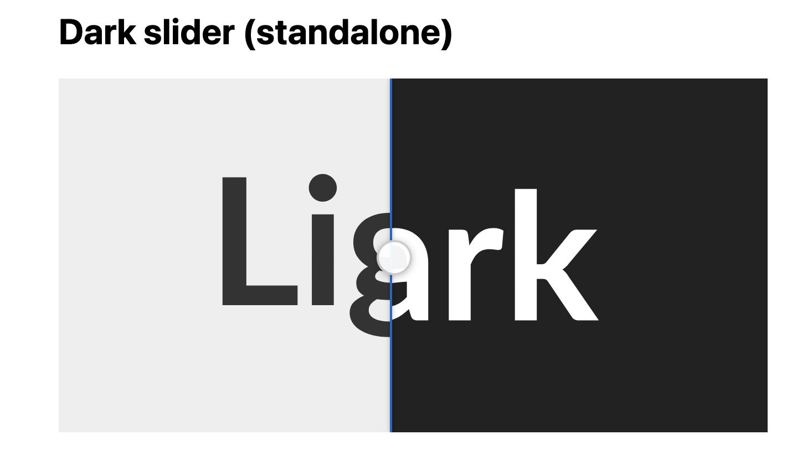

Light appears on the left of the handle; dark on the right. Drag the handle or use the keyboard-accessible range control.
Copy dark_slider_tag.rb into your Jekyll _plugins/ folder (or add this repo path under plugins: in _config.yml).
Copy dark-slider.css and dark-slider.js into your site (for example assets/css/ and assets/js/).
Link them in your layout:
<link rel="stylesheet" href="{{ '/assets/css/dark-slider.css' | relative_url }}">
<script src="{{ '/assets/js/dark-slider.js' | relative_url }}" defer></script>
dark-slider.js is vanilla JavaScript (no jQuery) and auto-initializes on DOMContentLoaded. You can also call DarkSlider.init(document) manually.
Pass the light image path. The dark image is derived by inserting -dark before the extension.
{% dark_slider /images/screenshot1.jpg %}
{% dark_slider 0 /images/screenshot1.jpg %}
{% dark_slider shadow 25 /images/ui.png "App UI" "Light vs dark mode" %}
{% dark_slider /images/ui.png 75 %}
| Value | Result |
|---|---|
0 |
Full dark (handle at left) |
100 |
Full light (handle at right) |
50 |
Default (omitted) |
Place the number before the path, after classes, or after the path (before quoted alt/caption).
| File | Role |
|---|---|
screenshot1.jpg |
Light (tag argument) |
screenshot1-dark.jpg |
Dark (auto-derived) |
Optional retina: screenshot1@2x.jpg, screenshot1-dark@2x.jpg (PNG works the same way).
Light and dark images must be the same dimensions.
For local images under your Jekyll source folder, the tag can generate WebP and AVIF when tools are available:
| Tool | Install (macOS) | If missing |
|---|---|---|
cwebp |
brew install webp |
One warning per build; JPEG/PNG still used |
avifenc |
brew install libavif |
One warning per build; AVIF omitted |
Pre-built .webp / .avif files are used when present. Optional tool paths in _config.yml:
dark_slider:
cwebp: /opt/homebrew/bin/cwebp
avifenc: /opt/homebrew/bin/avifenc
identify: /opt/homebrew/bin/identify
Omit a key to use the executable from your PATH.
The tag emits a figure.dark-slider with layered <picture> elements (or <img> for remote URLs), a range input, and a <noscript> fallback showing the light image.
| File | Purpose |
|---|---|
| dark_slider_tag.rb | Jekyll Liquid tag |
| dark-slider.css | Styles (required) |
| dark-slider.js | Interaction (required) |
| DarkSlider.jpg | Example screenshot |
Brett Terpstra — brettterpstra.com
{kind=link}